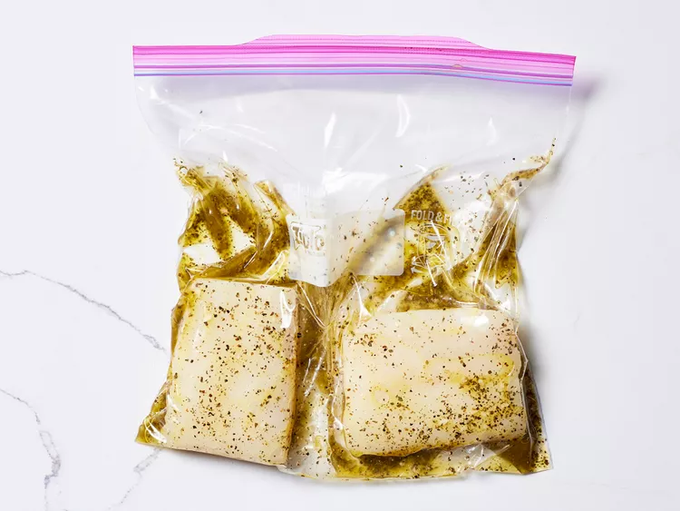

Home
Grilled Fish Steaks
Description
Simple grilled fish fillets full of flavor thanks to an easy marinade made with fresh lemon juice and herbs.
Ingredients
- 6 tablespoons olive oil
- 1 tablespoon fresh lemon juice
- 1 tablespoon chopped fresh parsley
- 1 clove garlic, minced
- 1 teaspoon dried basil
- 1 teaspoon salt or to taste
- 1 teaspoon ground black pepper
- ¼ teaspoon ground black pepper
- 2 (6 ounce) fillets halibut
Steps
-
Gather all ingredients.
-
Combine olive oil, lemon juice, parsley, garlic, basil, salt, and pepper together in a stainless steel or glass bowl.
-
Place halibut fillets in a shallow glass dish or a resealable plastic bag; pour marinade over fish fillets. Cover or seal and place in the refrigerator for 1 hour, turning occasionally.

-
Preheat an outdoor grill for high heat and lightly oil the grate. Set grate 4 inches from the heat.
-
Remove halibut fillets from marinade and drain off any excess. Cook on the preheated grill until fish flakes easily with a fork, about 5 minutes per side.